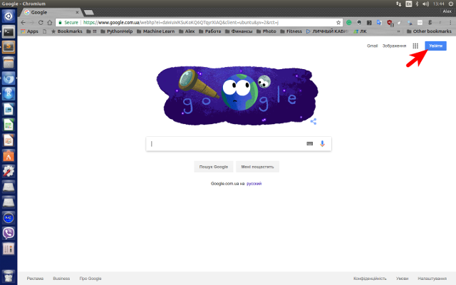
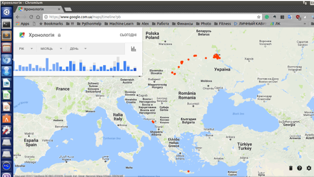
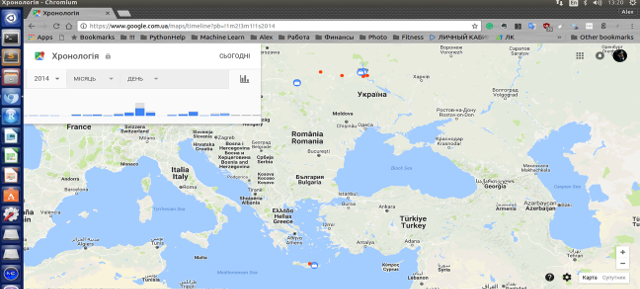
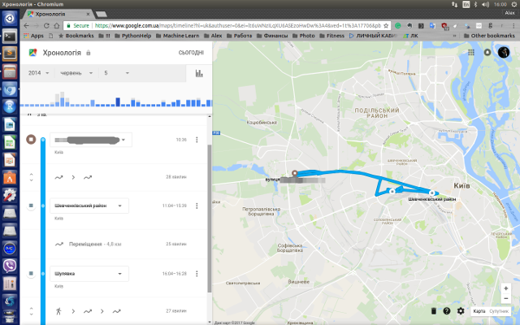

Практично в усіх зараз є мобільний телефон, дехто має навіть декілька. Значна частина користувачів мобільного зв’язку має смартфон, та, скоріш за все, має і обліковий запис Google, в якому зберігаються контакти. І якщо у вас на смартфоні дозволена передача даних про місцезнаходження, то Google зберігає у себе ваше розташування (принаймні, дуже хочу сподіватись, що це робиться тільки якщо ми дозволили).
В цій частині допису буде показано, як подивитись, що там збережено. У продовженні ми спробуємо більш детально розібратися, які ж дані та в якому форматі зберігаються, а також яку інформацію з них можливо видобути.
Спочатку давайте зайдемо в свій Google-акаунт. 
Далі ми можемо отримати історію своїх переміщень за посиланням https://www.google.com.ua/maps/timeline :

Карта показує (червоні крапки) всі мої місезнаходження з моменту, коли я ввімкнув дозвіл на зберігання моєї історії місцезнаходжень по сьогоднішній день. Також є змога задати період, що показується в лівому верхньому куті. Там можна вказати рік, місяць та день. Наприклад на цьому скріншоті я вказав весь 2014 рік:

Якщо ми виберемо конкретний день, то побачимо більш детальний маршрут за цей день:

На данному етапі ми бачимо що Google запам’ятовує наші координати, за умови що така дія була йому дозволена. Якщо такого дозволу не було чи ми видалили історію місцезнаходження - ми побачимо просто “пусту” карту.
В наступному дописі ми заглянемо глибше у дані щодо місцезнаходження і подивимось, яку ще інформацію можна звідти отримати.